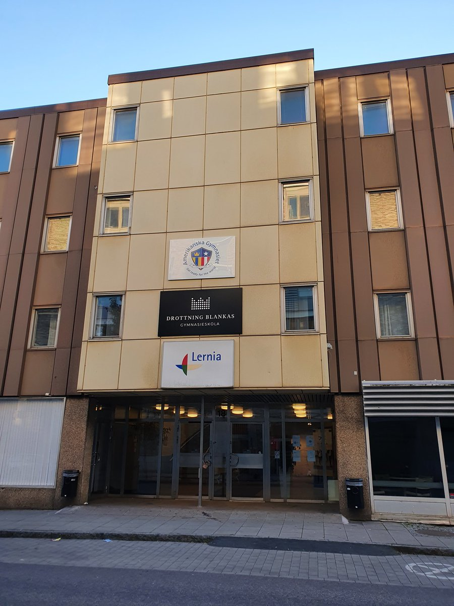
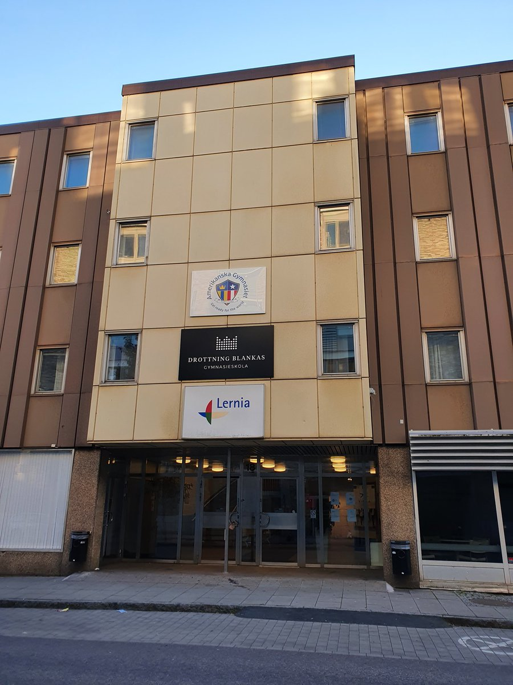

Webbutveckling 1; På webbutvecklingen lär vi oss mer om webben och hur det är man
t.ex skapar en hemsida och liknanade. Jag tycker att det är väldigt roligt ämne
då vi får koda och lära oss nya saker från grunden!
Svenska 1; I svenskan fokuserar vi just nu mest på dialekter. Vi läser mycket om
slang, svordomar, fult språk och modern/formellt språk vilket jag tycker är intressant
att läsa om.
Idrott och hälsa 1; På idrottslektionerna har vi väldigt kul för att det blir nya
sport varje lektion. Denna veckan ska vi t.ex vara i skatås och spela handboll.
Historia 1a1; Just nu arbetar vi med en grupp presentation om medeltiden, det är
väldigt intressant att läsa historia tycker jag.
Samhällskunskap 1b; Vi arbetar för det mesta med valet just nu.Vi hade presentationer
om partierna förra veckan och nästa vecka ska vi göra en analys om valet 2022.
Engelska 5; Engelskan är just nu mitt favorit ämne för att jag älskar att prata
engelska. Vi jobbar just nu med 'youth culture' och håller tal om olika kulturer
längre bak i tiden.
Matematik 1c; Matten är nog det roligaste för att man utmanar sig väldigt mycket genom
att förtsätta jobba tills man verkligen förstår. Vi har riktigt högt tempo när det
gäller matten och därför kan jag kalla den för den stressigaste ämnet.
 
